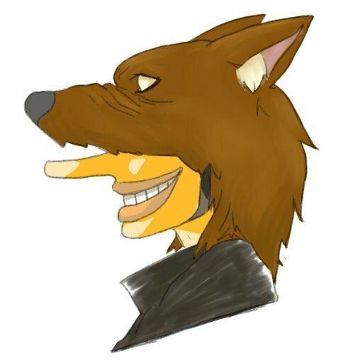
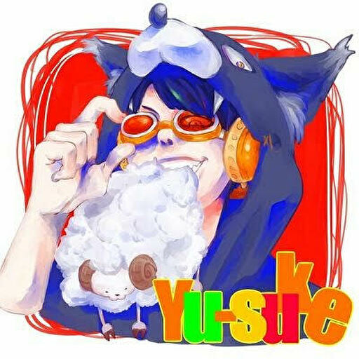

ユースケ@羊噛少年


主にツイキャスやYouTubeで活動している男性配信者。声真似や歌、ゲーム実況を中心に生配信や動画投稿を行っている。
目次
○プロフィール
基本情報
配信について
○主な活動サイト
○プロフィール
<基本情報>
- 名前
- ユースケ@羊噛少年
- 名前の由来
- ユースケ→「ウソップを実写化するなら？」というアンケートで1位だったユースケ・サンタマリアから取ったもの。
- 羊噛少年→ウソップから連想される「狼少年」をもじって、道民でジンギスカン(羊肉)が好きなことから。
- 生年月日
- 1992年8月31日
- 血液型
- O型
- 出身
- 北海道
- 好きな食べ物
- ジンギスカン、アップルパイ、チーズケーキ
- 趣味
- 配信、声真似、歌、知識を貪ること
- 好きなアニメ
- ONE PIECE、僕のヒーローアカデミア、進撃の巨人
- リスナーからの呼ばれ方
- ユースケ/さん/くん/氏
- ゆすけさん
- 族長
- 兄さん
- ボス
- 羊/さん
<配信について>
2009年1月からニコニコ動画、2014年1月からツイキャスをメインに活動。
- 推し名(自分の名前の後ろに付ける、リスナーであるというアピール)
- 羊噛民族。もとはジンギスカンオフ会の際にユースケさんに奢ってもらいたい人が付けるものだったが、次第に推し名となった。
- 声真似
- ユースケさんが配信を始めるきっかけとなったもの。大型企画を立てることもある。
声真似について詳しく→
- 歌
- 深夜やとても疲れているときに歌うことが多い。
歌について詳しく→
- ゲーム実況
- 声真似をしながらプレイしたり、リスナーと一緒にプレイしたりする。荒野行動や第五人格をメインに、苦手なホラーゲームもプレイする(させられる)。ホラゲだけでも既に80作以上プレイ済み。
- 雑談
- 持ち前の豊富な知識や経験をもとに話を展開する。雑談が好きなリスナー多め。
- 毒吐き枠
- 普段おおらかなユースケさんが珍しく黒くなる枠。あくまでユースケさんの考えをただただ話す。一部コアなリスナー層に受けがいい。
- 挨拶
- 放送の始めには「おばんです」、終わりには「したっけ」という挨拶をする。北海道弁で「こんばんは」「じゃあね」という意味。
○主な活動サイト
Twitter
/
YouTube
/
ツイキャス
ページトップに戻る